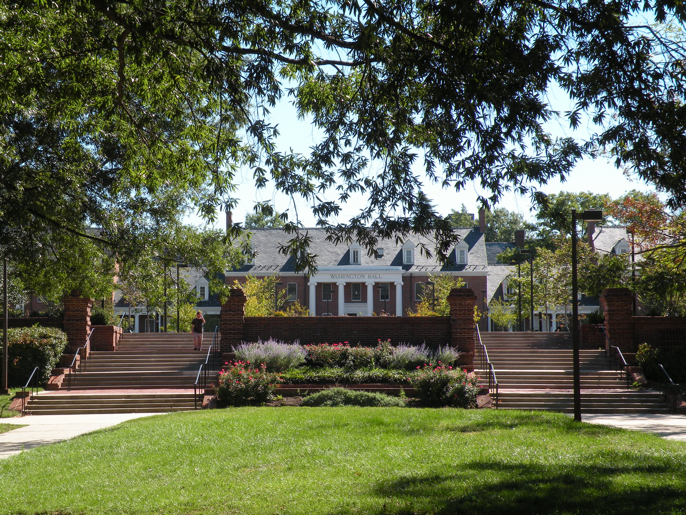
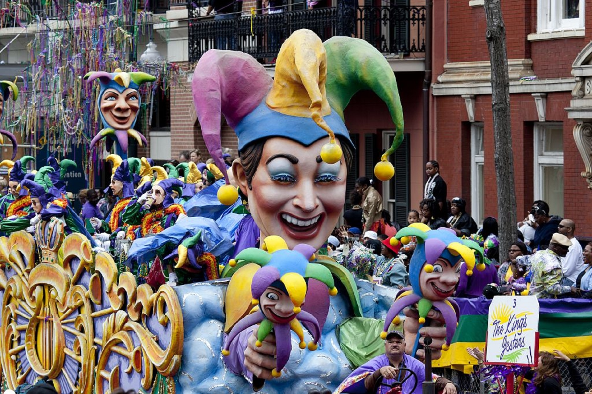
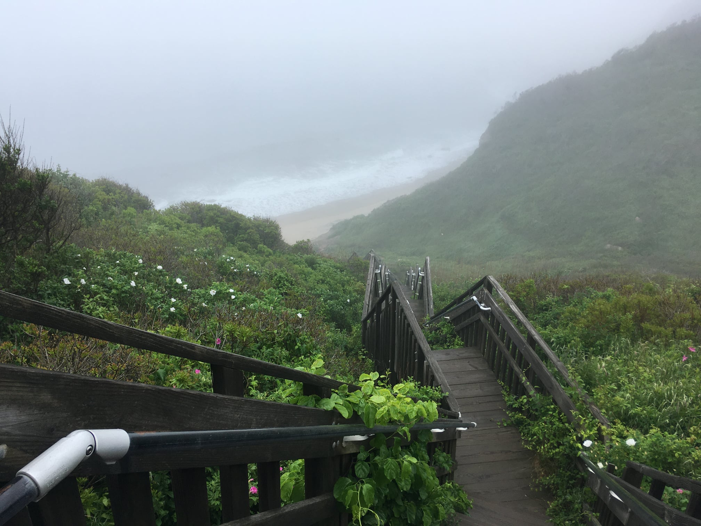
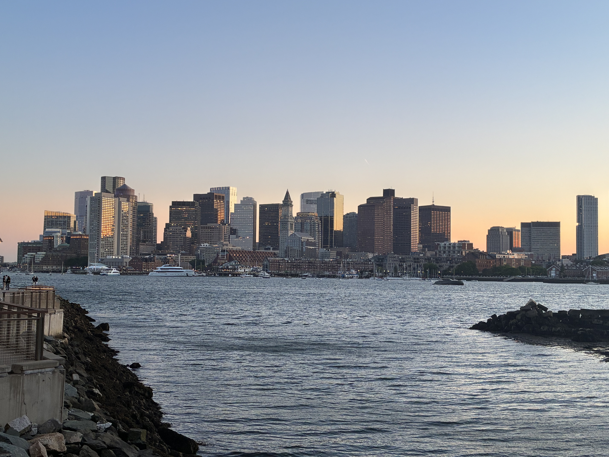

I am originally from the Washington D.C. area. From an early
age, I was fascinated by computers. As a kid, I designed my
own levels in Duke Nukem 3D and played Warcraft with friends
over a dial-up modem.

For my undergraduate degree, I went to the University of
Maryland, College Park where I majored in environmental
economics. After graduating, I spent a year working and then
went back to Maryland to get a masters in information
studies.

After getting my masters in information science, I spent
three months hiking on the Appalachian Trail and then moved
to New Orleans. I spent five years in the Big Easy working
in community education and libraries. It was also where I
met my wife.
In order to seek educational opportunities and be closer to
family, I moved to Vermont where I got a job at the Green
Mountain Club. I spent many of my weekends hiking in the
Green Mountains. The last few years in Vermont I worked at
Champlain College as an academic librarian.

After Vermont, I moved to Providence, Rhode Island, and
lived there for eleven years. During that time, I worked at
Roxbury Community College in Boston before moving to the
Fenway Library Organization (FLO), where I now work. I
earned a masters in history from UMass Boston during this
time.

I became the executive director of FLO five years ago. We
focus on providing technology to academic and special
libraries in Massachusetts. After many years communting
back-and-forth, I moved to the Boston area in 2026 and am
doing computer science coursework at Northeastern
University.